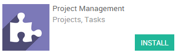
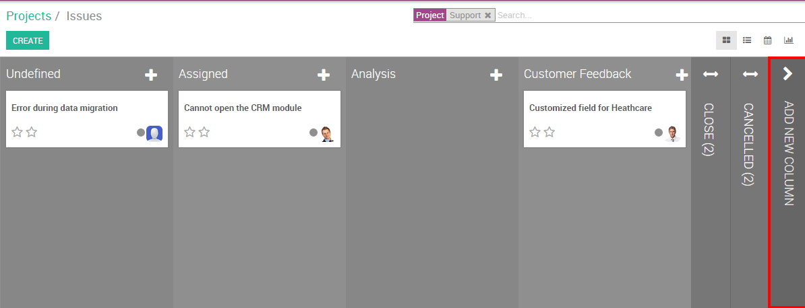

Компания, обслуживающая клиентов, часто сталкивается с проблемами, возникающими во время реализации проекта. Чтобы обеспечить выполнение проекта и сохранить хорошие отношение с клиентом, эти проблемы должны быть решены как можно быстрее, .
Например, Вы - ИТ-компания Продаете внедрение программного обеспечения. Вам, приходиться иметь дело с электронными письмами клиентов, испытывающих технические проблемы. Odoo предлагает возможность создавать специализированные проекты поддержки, которые автоматически генерируют задачи при получении почты на электронный ящик поддержки клиентов. Проблема может быть назначена непосредственно сотруднику и это позволит закрыть ее быстрее.
Настройка
Нижеуказанная конфигурация дает возможность использовать проекты для поддержки и обслуживания проблем клиентов. Вам необходимо установить модули Project management (Управление проектами) и Issue Tracking (Обслуживание проблем).

Создание проекта
Первым шагом для создания системы обработки претензий/проблем является создание проекта, связанного с этими претензиями. Начнем с простого создания проекта Support. Войдите в панель управления приложения Project, нажмите кнопку Создать и введите название проекта Support. Установите флажок Issues (Проблемы) и переименуйте поле, если вы хотите настроить название Проблемы (например, Ошибки или Случаи). Поскольку проблемы являются ориентированными на клиента задачами, вы можете установить параметры конфиденциальности/видимости в Customer project (ваш клиент сможет следить за выполнением своих проблем на портале).
Примечание
Вы можете связать проект с клиентом, если проект создан для обработки проблем конкретного клиента, вы можете оставить это поле пустым.
Пригласить подписчиков
Вы можете решить уведомить своих сотрудников, как только будет создана новая проблема. Над сообщениями (внизу экрана) вы увидите две кнопки справа: Follow (зеленая) и No follower (белая). Нажмите на первое, чтобы получать персональные уведомления, а на втором, чтобы добавить других сотрудников в качестве подписчиков проекта (см. Снимок экрана ниже).

Настройка бизнес-процесса
Вы можете легко персонализировать свои этапы проекта в соответствии с вашим бизнесс-процессом, создав новые столбцы. В представления Kanban вашего проекта вы можете добавить этапы, нажав на Add (Добавить) (см. Изображение ниже). Если вы хотите изменить порядок своих этапов, вы можете легко сделать это, перетащив столбец, который хотите переместить, в нужное место. Вы также можете редактировать, складывать или разворачивать свои этап, используя значок шестеренки на этапе.
Создание карточек проблем из писем
Когда ваш проект будет настроен и сохранен, вы увидите его на панели управления. Обратите внимание, что на основании имени проекта автоматически сгенерирует псевдоним адрес электронной почты для этого проекта.

Примечание
Если на карточке проекта нет адреса электронной почты , перейдите в меню и укажите свой псевдоним. Нажмите Применить и вы вернетесь к списку проектов, где теперь вы увидите адрес электронной почты под названием вашего проекта.
Каждый раз, когда один из ваших клиентов отправит электронное письмо на этот адрес электронной почты, будет создана новая карточка проблемы.